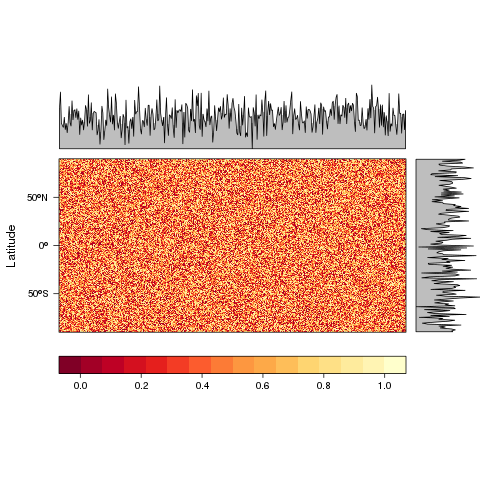

Frequently Asked Questions
Table of Contents
- How to define the breaks
- How to suppress axis labels and ticks
- How to rotate the axis label or use a different color
- How to plot a geographical subset of a raster?
- How to add an arrow
- How to add an scale
- How to print several Rasters with different legends in the same page
- How to label each panel with a different label from the layer name
How to define the breaks
Use the at argument to define the breaks.
f <- system.file("external/test.grd", package="raster") r <- raster(f) my.at <- seq(100, 1850, 500) levelplot(r, at=my.at)

Moreover, if you want to define where the labels are located
define the components of colorkey:
myColorkey <- list(at=my.at, ## where the colors change labels=list( at=my.at ## where to print labels )) levelplot(r, at=my.at, colorkey=myColorkey)

Last, you can even define the contents of the labels:
myColorkey <- list(at=my.at, ## where the colors change labels=list( labels=letters[seq_along(my.at)], ## labels at=my.at ## where to print labels )) levelplot(r, at=my.at, colorkey=myColorkey)

How to suppress axis labels and ticks
Use xlab=NULL, ylab=NULL and draw=FALSE inside scale.
r <- raster() r <- init(r, runif) levelplot(r, xlab=NULL, ylab=NULL, scales=list(draw=FALSE))

levelplot(r, xlab=NULL, scales=list(x=list(draw=FALSE)))

levelplot(r, ylab=NULL, scales=list(y=list(draw=FALSE)))

How to rotate the axis label or use a different color
Define main, xlab and ylab as vectors or lists with
arguments to be passed to grid::gpar.
r <- raster(nrow=10, ncol=10) r[] <- runif(100) levelplot(r, margin=FALSE, main=list('My plot', col='red'), xlab=c('Longitude', 'X-Axis'), ylab=list('Latitude', rot=30, fontface='bold') )

How to plot a geographical subset of a raster?
Use xlim and ylim
r <- raster(nrow=10, ncol=10)
r[] = 1:10
levelplot(r, xlim=c(-100, 100), ylim=c(-50, 50))

How to add an arrow
Use sp::layout.north.arrow with latticeExtra::layer.
f <- system.file("external/test.grd", package="raster") r <- raster(f) levelplot(r, margin=FALSE, auto.key=FALSE, scales=list(draw=FALSE)) + layer({ SpatialPolygonsRescale(layout.north.arrow(), offset = c(179000,332500), scale = 400) })

How to add an scale
Use grid.rect, grid.text and latticeExtra::layer.
f <- system.file("external/test.grd", package="raster") r <- raster(f) levelplot(r) + layer({ xs <- seq(181000, 181400, by=100) grid.rect(x=xs, y=330500, width=100, height=30, gp=gpar(fill=rep(c('transparent', 'black'), 2)), default.units='native') grid.text(x= xs - 50, y=330560, seq(0, 400, by=100), gp=gpar(cex=0.5), rot=30, default.units='native') })

How to print several Rasters with different legends in the same page
Use print.trellis and its argument split.
For two different RasterLayer.
r <- r2 <- raster() r[] <- runif(ncell(r)) r2[] <- 1:10 p <- levelplot(r, par.settings=RdBuTheme(), margin=FALSE) p2 <- levelplot(r2, par.settings=BTCTheme(), margin=FALSE) print(p, split=c(1, 1, 1, 2), more=TRUE) print(p2, split=c(1, 2, 1, 2))

A more sophisticated solution to print more than two layers.
s <- stack(r, r2, 10*r+r2, 10*r-r2) nl <- nlayers(s) m <- matrix(1:nl, nrow=2) themes <- list(RdBuTheme(), BTCTheme(), GrTheme(), PuOrTheme()) for (i in 1:nl){ p <- levelplot(s, layers=i, par.settings=themes[[i]], margin=FALSE) print(p, split=c(col(m)[i], row(m)[i], 2, 2), more=(i<nl)) }

How to label each panel with a different label from the layer name
Use names.attr.
r <- raster(nrow=10, ncol=10) r[] <- runif(100) s <- stack(lapply(1:8, function(i)r)) levelplot(s, scales=list(draw=FALSE), colorkey=FALSE, par.settings=GrTheme(), names.attr=paste0('MNF-', 1:8))